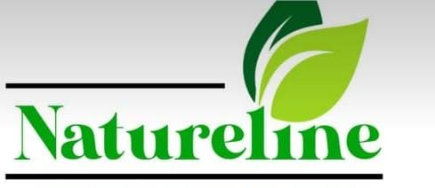

An alternative therapy for fibroid removal without surgery
Natureline pairs modern wellness support with compassionate guidance, offering a clear path for clients seeking non-surgical options and a calm, reassuring experience.

Why choose Natureline for fibroid support
We provide a clear, evidence-informed pathway for women seeking non-surgical fibroid management with clinical oversight and compassionate care.
Individualized assessment
Each client receives a thorough evaluation to determine the most suitable non-surgical treatment approach for their fibroid presentation.
Proven formulation
Our treatment utilizes botanical compounds specifically designed to support fibroid reduction and restore uterine health naturally.
Ongoing monitoring
Regular follow-up and reassessment ensure clients experience optimal results and feel supported throughout their care journey.

Meet the doctor
Dr. Adetunji offers deep experience and a thoughtful, personalized approach to reproductive wellness support.

Non-surgical fibroid treatment
Natureline offers a clinically guided, non-invasive approach to fibroid management. Our treatment protocol is designed to address symptomatic fibroids through botanical formulation, providing women with an alternative to surgery while maintaining regular clinical monitoring.
Client stories and trust markers
Realistic, reassuring stories with a simple and polished presentation for visitors.